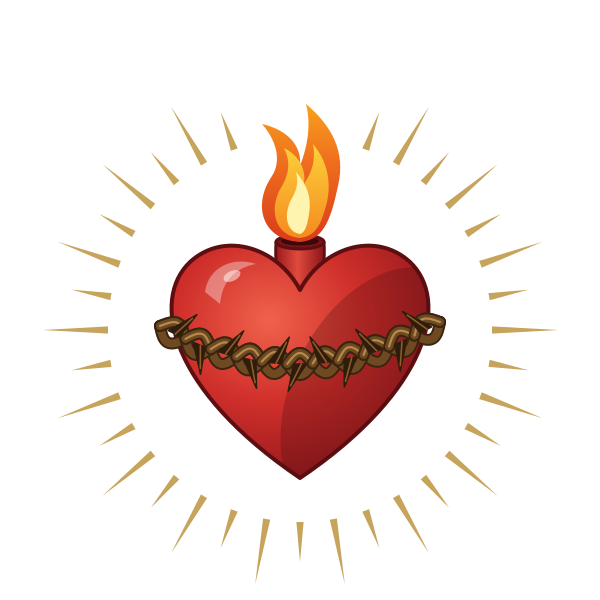
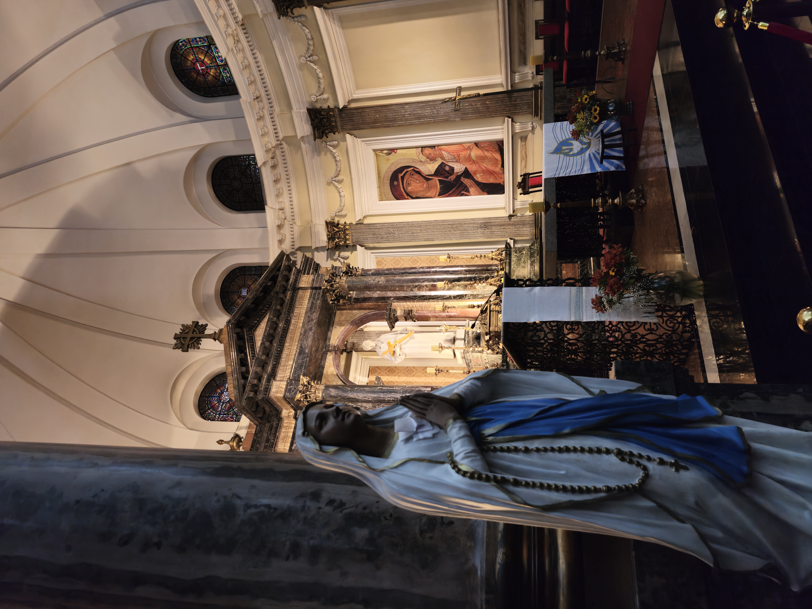

Jesus Eucarístico
Presença real, alimento da alma e centro de toda a vida cristã.
Aprofundar
Conhecer · Viver · Testemunhar
Um espaço para aprofundar a fé católica, guardar memórias da caminhada e encontrar beleza nas pequenas escolhas de cada dia.
“Permanecei em mim, e eu permanecerei em vós.” Jo 15;4

O centro de tudo
Creio em um Deus que se fez próximo, que permanece na Eucaristia e nos chama a caminhar juntos. A fé católica não é apenas aquilo em que acredito: é a maneira como aprendo a amar, servir e recomeçar.
Leia a história completa →Pilares da caminhada
Pequenos caminhos que nos conduzem para mais perto de Cristo
Presença real, alimento da alma e centro de toda a vida cristã.
AprofundarMãe que acolhe, aponta para Cristo e ensina a dizer “sim”.
AprofundarSilêncio, Palavra e confiança para reconhecer a voz de Deus.
Aprofundar